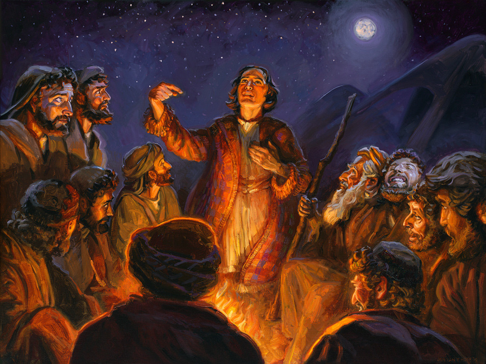
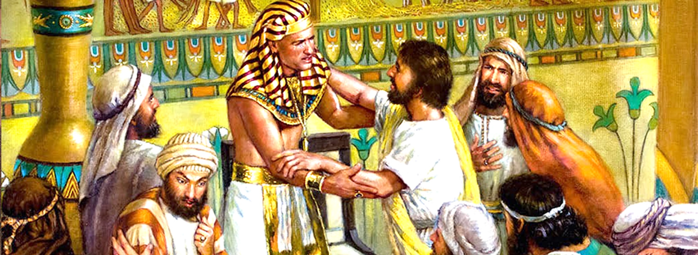

Joseph: Providence Through Suffering (Genesis 37-50)
"You meant evil against me, but God meant it for good..." (Genesis 50:20)
Joseph's story is one of betrayal, injustice, and redemption. Sold by his brothers, falsely accused, and imprisoned - yet through it all, God is at work. Joseph rises to power in Egypt and becomes the instrument of salvation for his family and the surrounding nations.

Betrayal and Descent
Joseph is favored by his father but hated by his brothers. Their jealousy leads to violence - they sell him into slavery and deceive Jacob. In Egypt, Joseph faces temptation and false accusation, landing him in prison. Yet even there, God is with him.
- Family betrayal: Sold for silver, stripped of dignity.
- False accusation: Integrity punished by injustice.
- Divine presence: The Lord was with Joseph in prison.
Elevation and Forgiveness
Through dreams and divine favor, Joseph is elevated to second-in-command in Egypt. When famine strikes, his brothers come seeking food. Joseph tests them, then reveals himself - not with vengeance, but with tears and grace.
He forgives, provides, and reunites the family. The covenant line is preserved, and God's providence is made visible through suffering.
Relevance to Salvation
- God works through suffering to accomplish His purposes.
- Forgiveness is central to covenant restoration.
- Joseph prefigures Christ - betrayed, exalted, and merciful.
"He has sent me ahead of you to preserve life." (Genesis 45:5)
